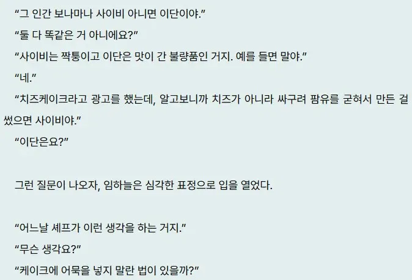

어느 웹소설의 사이비와 이단 구분법.jpg
댓글
비유 병신같은데?
처음부터 속이려고 작정 했느냐 vs 진짜 광기냐 이 뜻인 듯 ㅋㅋ
이해력 쥑이네 너
사이비=국가에서 제한하는 법의 범위를 넘어감
이단=종교단체에서 제한하는 교리해석의 범위를 넘어감
식품법에서 허가하는 종류의 재료를 넣음=팜유치즈, 어묵케잌 둘다 이단임
사이비는 왁스로 케이크 만든다던가 농약을넣에 만든다던가 하는 사례임
사이비는 사시이비에서 줄여진 말인데
겉은 옳아보여도 속은 그렇지 않은걸 말함
팜유치즈로 치즈케익을 만들어서 팜유치즈로 만든 치즈케익이 아니라 치즈케익으로팔면 사이비가 맞음
법이랑은 상관없는거고 사이비종교 지정하는것도 국가가 지정하는게 아니고 교회연합에서 지정하는거임
천주교나 불교 쪽보다 교회설립이 개인이 종교단체 만드는 방법 중에 가장 쉬워서 교회로 대부분 몰리니까
국가에선 종교차별그런게 불법이라 허가에 필요한 구색만 제대로 맞추면 종교단체로 허가 내 주는거고
비유 ㅈㄴ 잘한거임
여의도 순복음교회도 예전엔 이단이었음
제7의 안식일, 여호와의 증인 등 이단들=지들끼리 교리해석이 다른거지, 엥간해서 남에게 큰 피해는 안줌
사이비=jms, 아가동산(신나라 레코드), 옴진리교 등
-> 범죄 집단, 사이코 미친 시발새끼들
저딴비유가 맞나싶음

이단은 기존 교리의 해석에 벗어나면 이단이고
사이비는 cult라고도 하는데, 통상적인 종교하고 가장 큰 차이점은 유동적인 교리임.
이게 뭔 말이냐면 기독교나 사이비 다름이 없다고 생각할 수 있는데, 아무리 돈을 좋아하고 부정부패한 목사라고해도 기존 성경 내용을 변경할 수 없음. 예수나 12사도는 2천년전에 죽었고 성경은 어디서나 볼 수 있는건데 어떻게 바꿈? 그래서 교리나 해석들이 다 정해진 사항인데 특정인이 쉽게 못 바꿈. 이걸 바꿔서 해석하면 이단이고, 이단도 바꾸는데 정도가 있지 예수가 안했던 말 갑자기 지어낼 수 없는 노릇이라.
반면에 사이비는 교주나 소수의 집단이 교리를 자기 입맛대로 바꿀 수 있는 능력이 있음. 그래서 자기의 이익을 위해 교리를 쉽게 바꿀 수 있고 그만큼 신도들 착취가 가능함.
이단은 해석하는 교리가 다른 거고
사이비는 애초에 믿는 게 다름
비유는 나쁘지 않다고 생각해요
이단 = 입맛대로 지유리하게 해석
사이비 = 내가신이다
나도 이거라고 생각함
뭔 소리. 제대로 모르고 쓴 것 같은데.